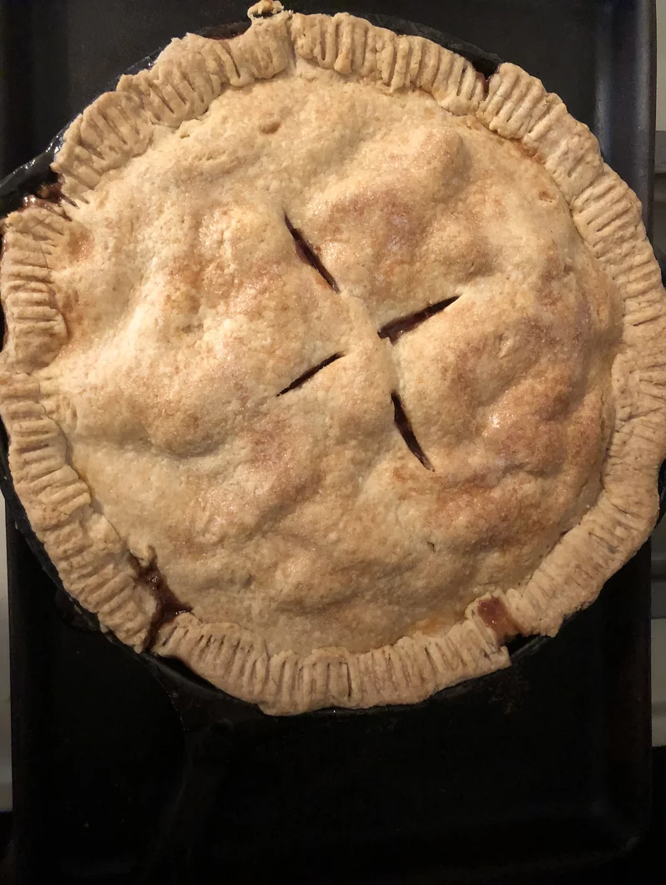

HOME
Apple Pie

This three-layer apple pie is a Southern favorite!
This recipe takes about 1 hour 15 mins from preparation to cook and serving.
Ingredients
The ingredients yields 8 servings.
- ½ cup butter
- 1 cup brown sugar
- 5 Granny Smith apples -- peeled, cored, quartered, and thinly sliced
- 3 (9 inch) refrigerated prerolled pie crusts
- 1 cup white sugar, divided
- 2 teaspoons ground cinnamon, divided
- ¼ cup white sugar
- 1 tablespoon butter, cut into small chunks
Directions
-
Preheat oven to 350 degrees F (175 degrees C).
-
Place 1/2 cup butter into a heavy cast iron skillet, and melt butter in the oven. Remove skillet and sprinkle with brown sugar; return to oven to heat while you prepare the apples.
-
Remove skillet, and place 1 refrigerated pie crust on top of the brown sugar. Top the pie crust with half the sliced apples. Sprinkle apples with 1/2 cup of sugar and 1 teaspoon of cinnamon; place a second pie crust over the apples; top the second crust with the remaining apples, and sprinkle with 1/2 cup sugar and 1 teaspoon cinnamon. Top with the third crust; sprinkle the top crust with 1/4 cup sugar, and dot with 1 tablespoon of butter. Cut 4 slits into the top crust for steam.
-
Bake in the preheated oven until the apples are tender and the crust is golden brown, about 45 minutes. Serve warm.
Nutrition Facts
734 calories; protein 3.4g; carbohydrates 107.8g; fat 33.7g; cholesterol 49.1mg; sodium 396.4mg.